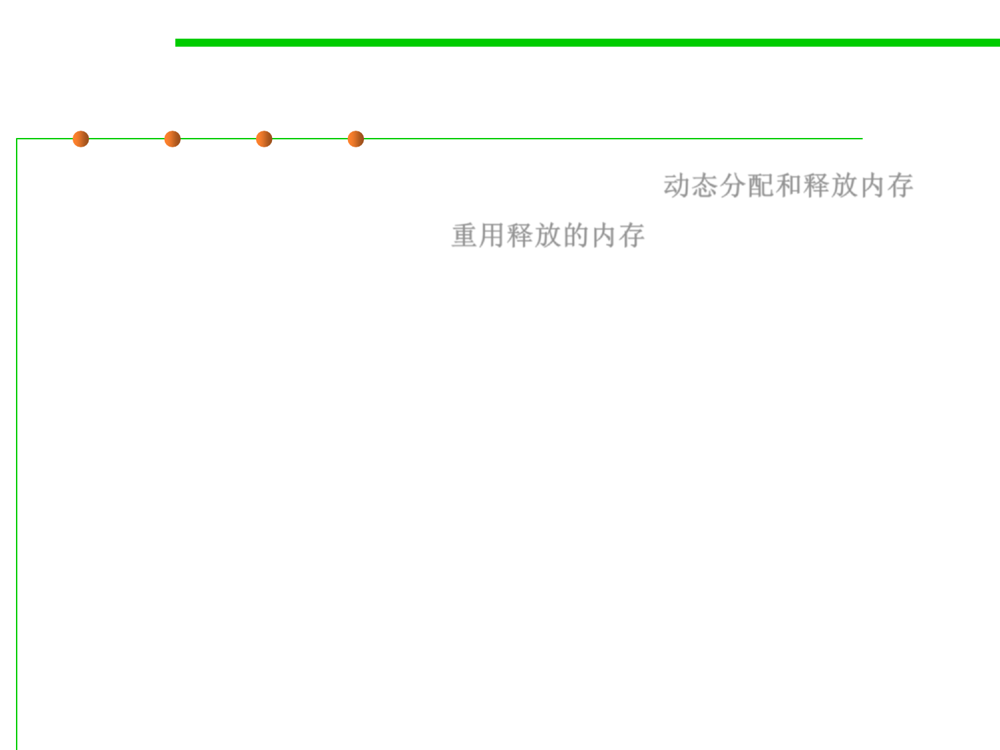

8.1 Metrics, Principles, and Methods of Construction for Performance
What can we do?
▪ Dynamically allocate and deallocate memory. 动态分配和释放内存
▪ REUSE deallocated memory. 重用释放的内存
– Allocation means finding a free piece of memory in the heap and
reserving it for the representation of an object.
– Deallocation means changing the status of a piece of memory from
allocated to free.
▪ Dynamical memory allocation is available in many languages, e.g.,
using languages features:
– New() or Constructors allocates a new object
– Delete()
deallocated the object X
▪ Such features allows programmer to handle allocation themselves.